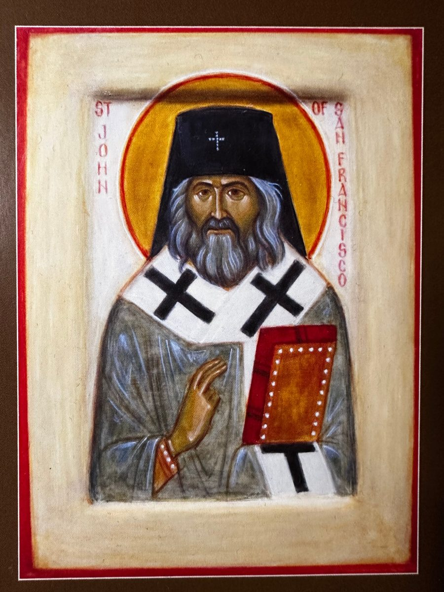
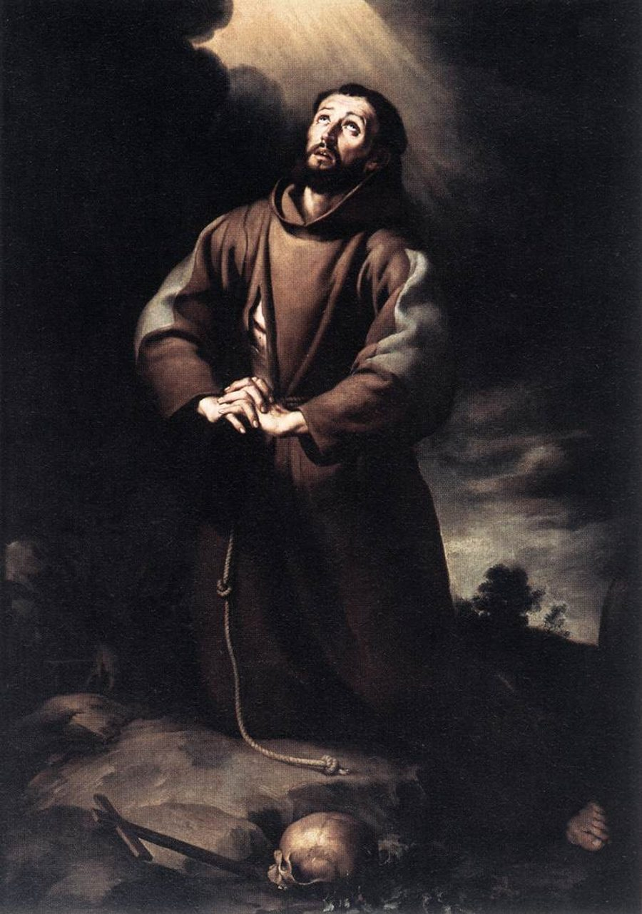
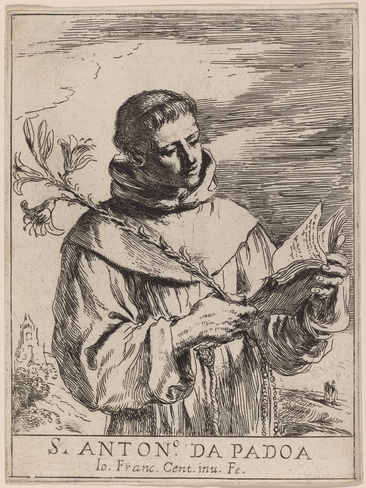
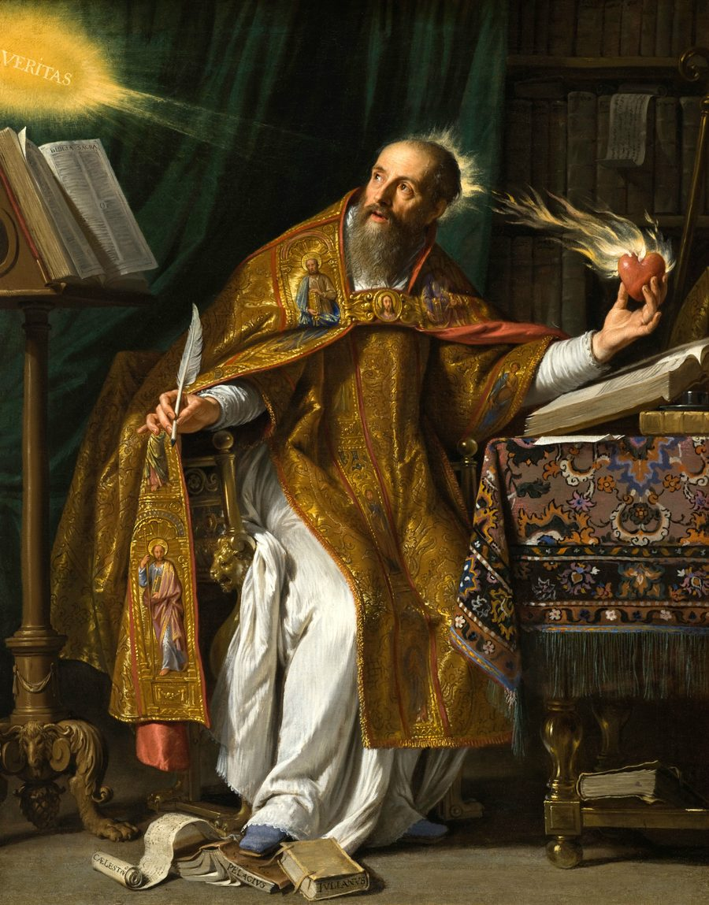
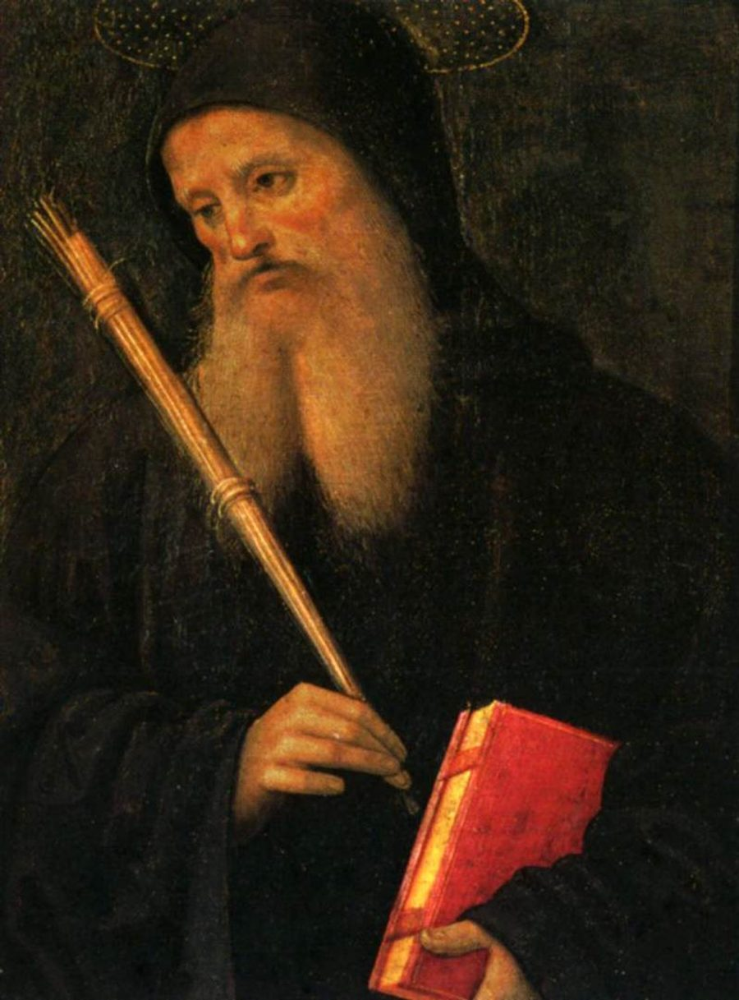
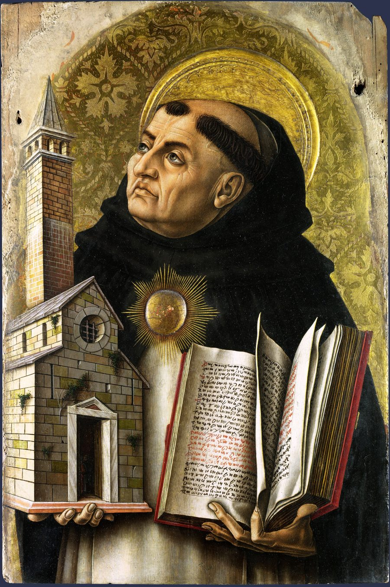
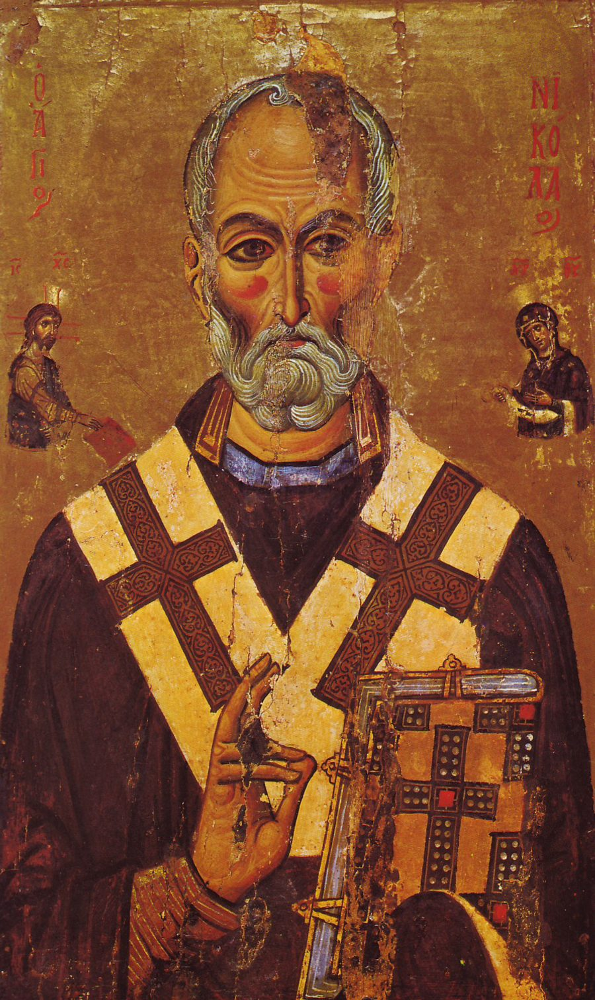
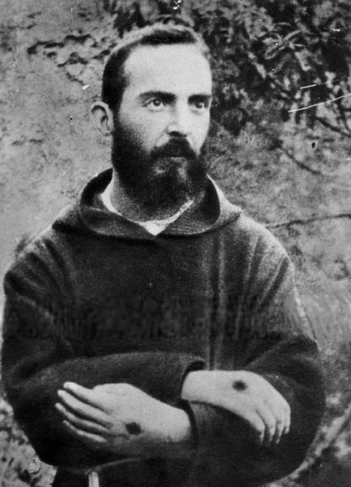
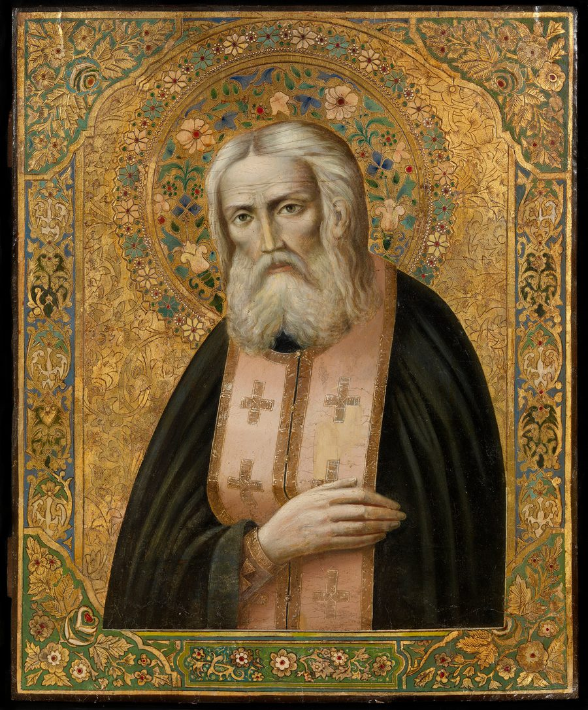
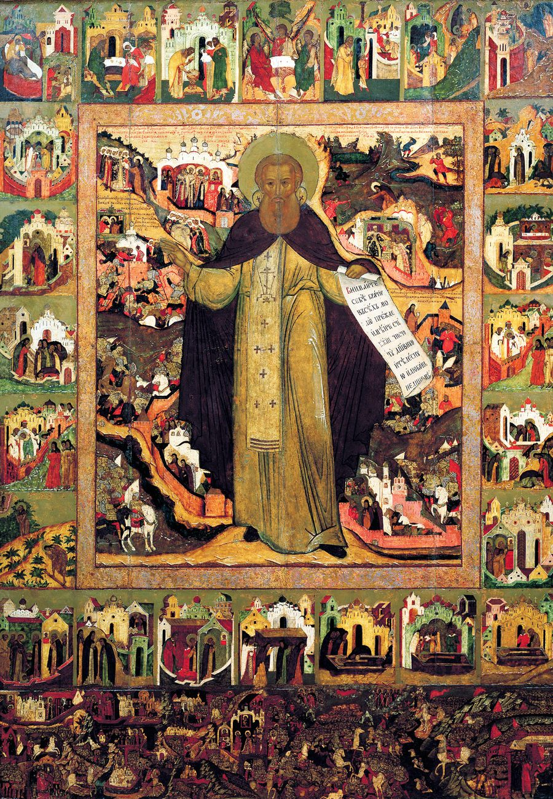

St. Thérèse of Lisieux
As a small child she rolled on the floor in fury, and at about three she took a whole basket of doll clothes, saying, "I choose everything!" At twenty-four, dying of tuberculosis in a Normandy convent, she overheard a sister wonder what anyone could write about her, since she had never done anything worth speaking about. St. Thérèse of Lisieux wanted to be a great saint and found she was a grain of sand. In her last eighteen months even Heaven went dark for her, and she went on loving. How did the nun who had done nothing worth speaking about become one of the most loved saints of modern times, and a Doctor of the Church?

St. John Maximovitch
St. John Maximovitch knew what it meant to lose a home. As a young man, he fled Russia with his family. As an Orthodox bishop, he helped others start again. He cared for children in Shanghai, visited sick people, and asked American leaders to help stranded refugees. His work later took him to Europe and San Francisco. People remembered his long prayers, his care for those in need, and the way he kept in touch as children grew up.

St. Francis of Assisi
In a Perugia prison around 1202, a rich cloth merchant’s son laughed at his chains and told the other prisoners that the whole world would one day honor him. Within a few years he had kissed a leper’s hand and handed his clothes back to his father in front of the bishop. Later he crossed the lines of a crusade to preach to the Sultan of Egypt, gave away the leadership of the Order he had founded, and died on the bare ground in a habit that was only lent to him. How did a young man who wanted glory find it by owning nothing? His story begins with something he found bitter, and what it became.
St. Teresa of Ávila
At seven, St. Teresa of Ávila slipped out of the city gate with her brother to be beheaded by the Moors, because the sight of God seemed cheap at that price. An uncle met them on the bridge. Years later, a charming nun whom visitors came to see, she gave up prayer for more than a year and struggled in it for years. Then she began founding convents, laughing at herself, while a preacher compared her to a fraud, the Inquisition took her book, and a papal envoy called her a restless gadabout. In 1970 she became the first woman Doctor of the Church. How? It began with one discovery: prayer is friendship.

St. Anthony of Padua
At a gathering of friars at Assisi in 1221, when the ministers chose the brothers they would take home, one sick, unknown friar from Portugal was passed over: St. Anthony alone was asked for by no one. He had joined the Franciscans to die as a martyr in Morocco, and illness and a storm had sent him back. Ten years later thirty thousand people stood silent in the fields of Padua to hear him, and when his grave was opened, his tongue was found fresh and red. How did the friar nobody wanted become the voice of a city?

St. Augustine of Hippo
As a young man, St. Augustine prayed to be made pure and added two words: "not yet." He was afraid, he admitted, that God would answer too soon. He stole pears he did not want, lied to his mother on the shore at Carthage and sailed away while she prayed, and spent nine years in a sect. Then a child's voice in a garden in Milan chanted "Take up and read." The restless teacher became a priest seized by a crowd while he wept, a bishop with a verse against gossip inscribed on his table, and the author of the Confessions. How does a man who fears his own prayer become one of the great teachers of the Church?

St. Benedict of Nursia
The first monks who asked St. Benedict to be their abbot put poison in his wine. When he blessed the glass, it shattered, and he told them mildly that he had warned them: their way of life and his would never agree. Then he went back to his cave. He had left Rome to be alone with God, yet people kept finding him: a priest at Easter, shepherds, a Gothic king who tested him with a servant in royal robes, and a sister whose prayer brought down a storm to keep him talking all night. How did a hermit who fled the world become the father of monks who live together, and the patron of Europe?

St. Thomas Aquinas
One morning in December 1273, after Mass in a chapel at Naples, St. Thomas Aquinas stopped writing his Summa in the middle of a treatise and never wrote again. By a sworn account at his canonization inquiry, he told his secretary that everything he had written seemed like straw compared with what he had seen. As a young man he had been seized on the road by his own brothers and held captive to keep him from becoming a friar. Later a pope offered him an archbishopric, and he refused it. This is the life of the silent student whom classmates, legend says, called the dumb ox, and of what the man who wrote so much about God wanted most.

St. Nicholas of Myra
The oldest known story of Saint Nicholas has no Santa Claus and no bag of gold. It has a bishop of Myra running to an execution ground, taking the sword from the executioner's hands, and telling the governor that the real criminal was a bribe. Almost nothing about him can be proved, yet Orthodox tradition ranks him among its most venerated saints, and the West calls him the patron of sailors and children. How did a man history barely recorded become the saint whom half of Christendom calls on in trouble? Every layer of his story, from the oldest to the latest, shows the same man.

St. Pio of Pietrelcina
When red marks appeared on the palms of a young priest in a southern Italian village, he asked his parish priest to pray that Jesus would take them away. He was willing to suffer, he said, but all of it in hiding. Instead St. Pio carried bleeding wounds in his hands, feet, and side for fifty years. Doctors argued over them, the Holy Office silenced him, and pilgrims lined up before dawn to hear his Mass and confess to him. Asked how his humility survived it all, he laughed and talked about a gold watch. How did a man who wanted only to be a poor friar who prays carry such a gift without making it his own?

St. Seraphim of Sarov
In September 1804 three peasants beat a hermit nearly to death in the forest near Sarov, looking for his money. He had put down his axe rather than fight them. They found an icon and some potatoes, and he begged that they go unpunished. St. Seraphim of Sarov spent thirty years in the forest, on a stone, in silence, and behind a locked door with an oak coffin in the entry. Then he spent his last years greeting every stranger, in any season, with "My joy, Christ is risen!" What was the treasure the robbers never found, and how did a man who once hid his face from passers-by end his life with a crowd at his door?

St. Sergius of Radonezh
A plowman walked a long way to see the famous hegumen of a forest monastery near Radonezh, and found a man in a patched robe digging a garden. "I came to see a prophet," he said, "and you show me an orphan." Then a prince rode in and bowed to the gardener. St. Sergius of Radonezh was a boy who could not learn to read, a hermit who shared his last crust with a bear, and the monk whose blessing a grand prince sought before he marched against the Horde. How did he become the Hegumen of the Russian land without ever ceasing to be poor?